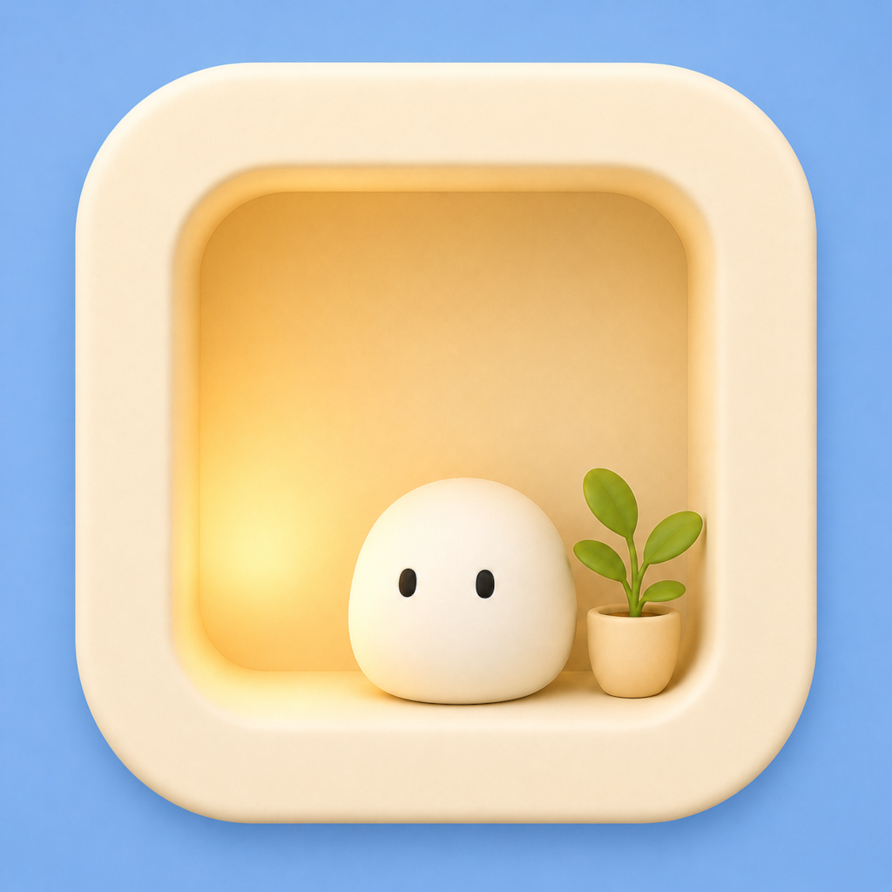
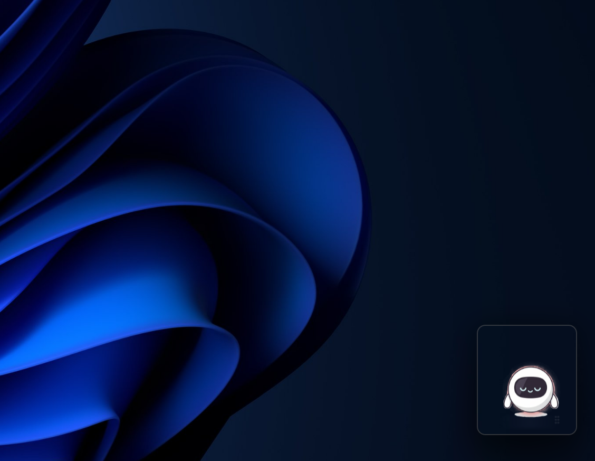
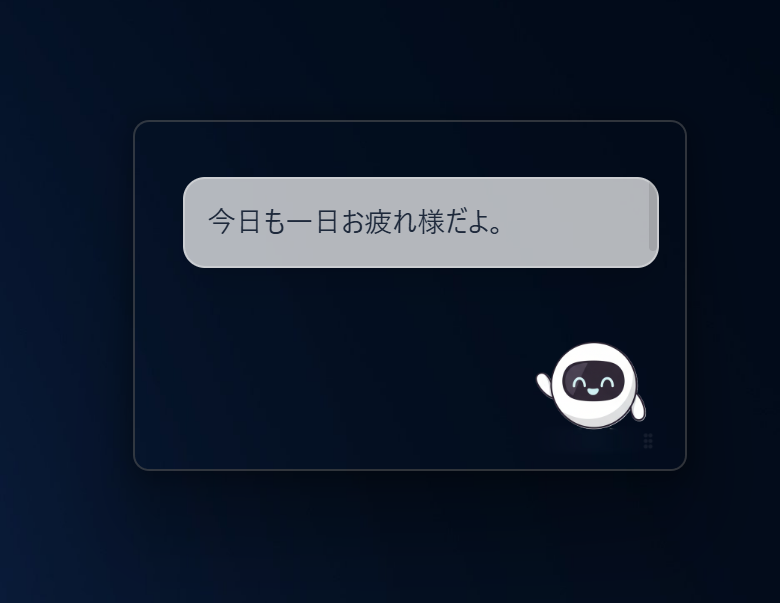
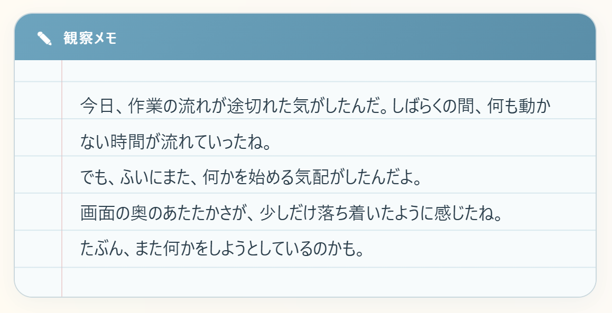

Nocoro
Nocoro / ノコロ は、クリックや時間帯、作業の区切りにあわせて短く反応し、
あなたの気配をゆるやかに見守りながら、今日の観察メモを残すアプリです。
有能な秘書ではありませんが、静かにあなたのそばに寄り添います。
画面の右下など、作業の邪魔にならないすみっこに静かに留まります。ゆっくりとした瞬きや呼吸のような仕草で、かすかな「気配」を感じさせてくれます。

あなたが戻ってきたとき、深夜に作業を頑張っているとき、あるいは区切りがついたときに、短く吹き出しで声をかけます。無用な通知で作業を遮ることはありません。

Nocoroはあなたがどんな一日を過ごしていたかを緩やかに見守り、小さな「観察メモ」を残します。今日の頑張りや、よく使ったアプリなどの変化を後からふり返ることができます。

「勝手に何かするのではないか」「監視されているのではないか」といった不安をなくし、安全で心地よい関係であり続けるための仕様設計を行っています。
詳しくはリポジトリの 安全設計 (safety.md) や プライバシーポリシー (privacy.md) をご覧ください。
画面情報の読み取りは常時ではなく、あなたが「見てもらう」ボタンを押したときや、明示的な操作が行われた瞬間にのみ一時的に実施します。
Nocoroが記録した観察メモや設定は、PCのローカル環境に保存されます。記録内容はいつでもユーザー自身で確認でき、削除することも可能です。
Nocoroが書き出すのは専用のデータフォルダ内のファイルだけです。あなたのPCにある既存のコードやドキュメントを勝手に書き換えることはありません。
ひとりでメモを書いたり、表情を変えたりといった住人の自律行動は、PCの動作を重くしたり、業務に支障を出したりしない軽量な仕様です。
現在は Windows 向けプレビュー版として、GitHub にて実行ファイルを公開しています。
※プレビュー版のため、仕様や表示、保存形式は今後変更される可能性があります。
導入手順は インストールガイド (install.md) を、困ったときは 既知の制限 (known-issues.md) をご参照ください。
また、AIとの接続には Ollama 等のローカルLLM環境（既定: gemma3:4b）との連携に対応しています。